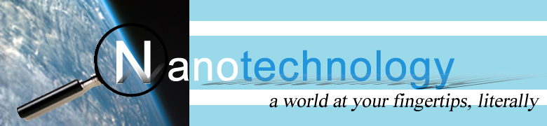
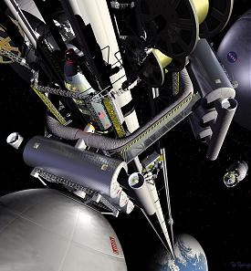

|  | |
|---|---|
Space ElevatorIn November of 2008, engineers from all over the world attended a conference in Japan to discuss and design a lift that will transport anything directly into space. The ‘space elevator’, as it is called, has received worldwide coverage; NASA has posed this concept with a $4 million prize as a challenge to encourage more designs. The Japan Space Elevator Association, Spaceward Foundation and Liftport Group are three companies focused on this project. 
Those working on the project right now believe that the power source of the elevator will most likely come from a carbon nanotube cable, which has enough strength to span the length from Earth to space. However, scientists are unsure of how to make a cable long enough. Once completed, the cable would be anchored to Earth and reach into space with a weight to balance it on the other side. Inertia is theorized to keep the cable tight. The space elevator would be used to transport people into space, dispose of nuclear waste and place solar panels in space to provide power to homes. |
|
| Copyright 2009 ® Alisa Nguyen | |